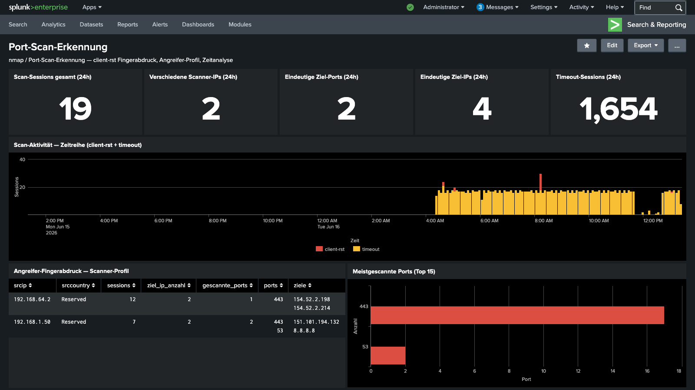

Kontext
In diesem Lab-Szenario wurde von einem Kali-Linux-Client (Debian ARM64)
ein nmap SYN-Scan gegen 8.8.8.8 (Google DNS) durchgeführt.
Der gesamte Datenverkehr läuft dabei durch eine FortiGate-VM 7.4.12,
die alle Verbindungsversuche protokolliert.
Die Frage: Kann eine Firewall einen Port-Scan erkennen — ohne IPS, nur auf Basis von Traffic-Logs?
Lab-Architektur
Wie nmap in Firewall-Logs erscheint
Ein nmap SYN-Scan (-sS) sendet ein TCP-SYN-Paket an jeden Zielport.
Je nach Zustand des Ports reagiert das Ziel unterschiedlich:
- Port offen: Ziel antwortet mit SYN-ACK → nmap sendet RST (Verbindung abgebrochen)
- Port geschlossen: Ziel antwortet mit RST → FortiGate loggt
action=client-rst - Port gefiltert: Keine Antwort → FortiGate loggt
action=timeout
Der entscheidende Fingerabdruck: Bei einem nmap SYN-Scan gegen einen
geschlossenen Port sendet nmap genau 64 Bytes (SYN-Paket mit Options).
Die Firewall leitet dieses Paket weiter (164 Bytes mit Ethernet/IP-Header) und empfängt
den RST (60 Bytes). Dieses Muster — sentbyte=164 / rcvdbyte=60 —
ist ein zuverlässiger nmap-Fingerabdruck.
FortiGate Log-Analyse
Die FortiGate-VM protokolliert jeden Verbindungsversuch als Traffic-Log. Für Port-Scan-Erkennung sind folgende Felder relevant:
type=traffic— Verbindungseventaction=client-rst— Verbindung durch RST beendet (Scan-Indikator)sentbyte=164— Gesendete Bytes (nmap SYN-Paket-Größe mit Headers)rcvdbyte=60— Empfangene Bytes (RST-Paket-Größe)srcip/dstip/dstport— Quell-IP, Ziel-IP, Ziel-Portservice— Erkannter Dienst (z.B. DNS, HTTPS)
SPL — Port-Scan-Erkennung
Ergebnisse aus dem Lab
Der nmap-Scan von 198.51.100.50 (Kali) gegen 8.8.8.8 erzeugte
6 client-rst Sessions auf den Ports 53 (DNS) und
443 (HTTPS). Alle anderen Ports erschienen entweder als offen oder
gefiltert und wurden nicht als client-rst geloggt.
Befund: FortiGate erkennt nmap-Scans zuverlässig anhand des
TCP-RST-Fingerabdrucks — ohne IPS-Modul, allein auf Basis der Traffic-Logs.
Das Byte-Muster sentbyte=164 / rcvdbyte=60 ist tool-spezifisch für
nmap und erlaubt die Unterscheidung von normalem Datenverkehr.
Das Splunk-Dashboard
Das Port-Scan-Erkennung-Dashboard visualisiert die Scan-Aktivität in Echtzeit:
- KPI-Karten: Scan-Sessions, Scanner-IPs, gescannte Ports, Ziel-IPs, Timeout-Sessions
- Zeitreihe: Wann wurde gescannt? (5-Minuten-Intervall)
- Angreifer-Fingerabdruck: Pro Scanner-IP: Ziel-IPs, Ports, Häufigkeit
- nmap Byte-Profil: Tool-Erkennung anhand sentbyte/rcvdbyte-Muster
- Scan-Map: Welche Quell-IP hat welche Ziel-IP und welchen Port gescannt?
- Traffic-Vergleich: Normaler Datenverkehr vs. Scan-Sessions (Pie-Chart)

Abb. 1 — Port-Scan-Erkennung Dashboard: 19 Scan-Sessions, 2 Scanner-IPs (192.168.64.2, 192.168.1.50), Top-Port 443 — in Splunk Enterprise
Architektur: FortiGate → Splunk
Defensive Maßnahmen
Was bleibt
Dieses Lab zeigt, dass Firewall-Traffic-Logs allein für die Erkennung von Port-Scans ausreichen — kein IPS, keine Deep Packet Inspection erforderlich. Der TCP-RST-Fingerabdruck von nmap ist konsistent und gut zu erkennen.
- FortiGate loggt jeden Verbindungsversuch mit Byte-Zählern
- nmap SYN-Scan erzeugt ein eindeutiges
sentbyte=164 / rcvdbyte=60-Muster - Splunk SPL kann dieses Muster in Echtzeit erkennen und visualisieren
- Angreifer-Profile lassen sich automatisch aus den Logs aufbauen
Weiterführend: FortiGate IPS-Sensor-Integration für automatische Blockierung erkannter Scanner sowie Splunk-Alerts für Echtzeit-Benachrichtigung bei Port-Scan-Aktivität.